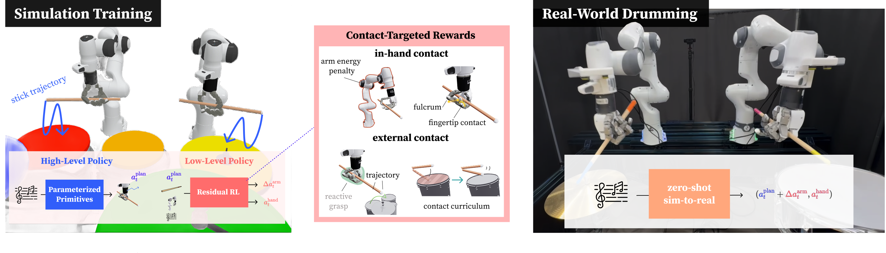

Abstract
Performing in-hand, contact-rich, and long-horizon dexterous manipulation remains an unsolved challenge in robotics. Prior hand dexterity works have considered each of these three challenges in isolation, yet do not combine these skills into a single, complex task. To further test the capabilities of dexterity, we propose drumming as a testbed for dexterous manipulation. Drumming naturally integrates all three challenges: it involves in-hand control for stabilizing and adjusting the drumstick with the fingers, contact-rich interaction through repeated striking of the drum surface, and long-horizon coordination when switching between drums and sustaining rhythmic play. We present DexDrummer, a hierarchical object-centric bimanual drumming policy trained in simulation with sim-to-real transfer. The framework reduces the exploration difficulty of pure reinforcement learning by combining trajectory planning with residual RL corrections for fast transitions between drums. A dexterous manipulation policy handles contact-rich dynamics, guided by rewards that explicitly model both finger–stick and stick–drum interactions. In simulation, we show our policy can play two styles of music: multi-drum, bimanual songs and challenging, technical exercises that require increased dexterity. Across simulated bimanual tasks, our dexterous, reactive policy outperforms a fixed grasp policy by 1.87x across easy songs and 1.22x across hard songs F1 scores. In real-world tasks, we show song performance across a multi-drum setup. DexDrummer is able to play our training song and its extended version with an F1 score of 1.0.
Method

Analysis
Finger-driven vs. Arm-driven for precise control
Finger-driven
More dexterous stick stabilization and consistent strike timing.
Arm-driven
Relies more on arm motion with less in-hand adjustment.
Contact Curriculum
With Contact Curriculum
Policy trained with contact curriculum.
Without Contact Curriculum
Policy trained without contact curriculum.
BibTeX
@misc{fang2026dexdrummer,
title={DexDrummer: In-Hand, Contact-Rich, and Long-Horizon Dexterous Robot Drumming},
author={Hung-Chieh Fang and Amber Xie and Jennifer Grannen and Kenneth Llontop and Dorsa Sadigh},
year={2026},
eprint={},
archivePrefix={arXiv},
primaryClass={cs.RO},
url={},
}